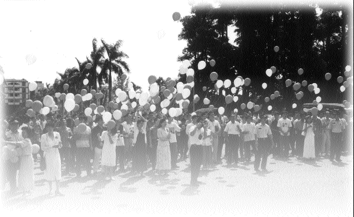
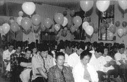
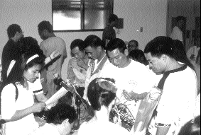

| L'amour en action |
libérés sur parole. |
En coopération avec l'Office des Procureurs du district de Hualien, le Centre de Hualien a organisé à la mi-automne, une session de prières pour les libérés sur parole. L'intention des disciples était d'aider ces hommes endurcis qui ont souffert de blessures mentales, à prier pour eux, leurs familles et pour la paix dans le monde. On espérait aussi que leurs âmes s'élèveraient un peu.
Le moment le plus émouvant de cet événement a été quand quelqu'un a lu tout haut une prière pour tous ceux qui étaient présents, pendant qu'on entendait la cassette de Maître chantant : " Namo Guan Yin Bodhisattva ". Les participants ont baissé la tête et ont prié en silence, et certains de ces homme durs ont pleuré du plus profond de leur cœur. Les initiés ont réellement senti les bénédictions de Dieu et des Saints sur l'assemblée. L'amour de Maître a fait fondre des cœurs qui avaient été longtemps glacés. L'événement s'est terminé par un lâché de ballons dans le ciel. Quand ces mains trapues ont relâché les petits ballons, les laissant s'élever dans le ciel, ce fut un très beau spectacle. Nous souhaitons que le monde puisse être à l'avenir en paix, et où nous pourrions tous vivre libres et sans soucis, comme si nous étions au paradis.
|  | Alors que les ballons s'envolaient dans le ciel, l'espoir a remplacé l'ombre des ténèbres |
|  | Tandis qu'on entend la cassette des chants de Maître, les participants ferment leurs yeux pieusement et prient |
|  | On offre des gâteaux de Lune aux participants |